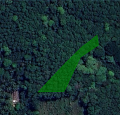

KUDUGALAYAYA KARAWILA BADALKUMBURA - TEMPORAL ANALYSIS 2020-2023
| 2020 | 2021 | 2022 | 2023 |
|---|---|---|---|
 |
 |
 | |
| Deforestation risk is low (farm unit does not overlap forested areas with tree cover loss) | Deforestation risk is low (farm unit does not overlap forested areas with tree cover loss) | Deforestation risk is low (farm unit does not overlap forested areas with tree cover loss) | Deforestation risk is low (farm unit does not overlap forested areas with tree cover loss) |
| Encroachment risk is low (Land is not encroaching with a protected area) | Encroachment risk is low (Land is not encroaching with a protected area) | Encroachment risk is low (Land is not encroaching with a protected area) | Encroachment risk is low (Land is not encroaching with a protected area) |
Area Information
| Total Area | Inters. - Potec. Areas |
|---|---|
| 0.12 ha | 0.00 ha |
| Inters. - Deforested Area | Eligible Area |
| 0.00 ha | 0.12 ha |
Legend
| Risk Level | |
|---|---|
| No Risk Area | |
| Medium Risk Area | |
| High Risk Area | |
| "Go": Protected Area where certain regulated economic and agricultural activities are allowed under specific conditions (specified in the applicable law) | |
| "No Go": strictly protected high conservation area. Agricultural production is not allowed under applicable law. | |
| Areas with tree cover loss |
Data Source
- Images: Google Earth
- Land use identification: Sentinel Hub and satellite data
- Land use classification: Hansen, M.C. et al. 2013. High-Resolution Global Maps of 21st-Century Forest Cover Change.
- Protected Area: IUCN and UNEP-WCMC(2023). The World Database on Protected Areas (WDPA), Cambridge, UK: UNEP-WCMC.
Technical Data
20M

Powered by “CarbonEngen” by Engenuity Ai